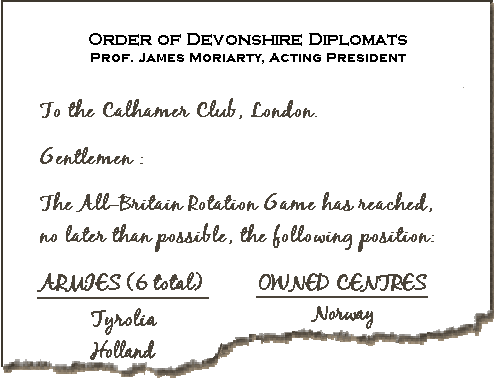

|
Sherlock Holmes,
|
|
My friend Sherlock Holmes and I had taken our supper a bit earlier than usual, and so it was with some pleasure that we realised we could spend the remainder of our evening at the Calhamer Club. After calling for a boy, Holmes dispatched messages to a number of our acquaintances, informing them that we would enjoy their company there should they be available and so inclined. Having sent the young courier off to deliver these messages, we hailed a hansom cab and were on our way. Arriving at the club, we were gratified to see a number of ongoing games, as well as a group of seven members holding a lively conversation at the fire. Joining them, we inquired as to why they were not engaged in a game, as they made up the perfect number for play. "Alas, Dr Watson, indeed we had been hoping to share a board this evening," said a tall gentleman. "In point of fact, we had gathered here to-night to play our club's turn in the All-Britain Rotation Game. Are you familiar with this event?" Being longstanding members of the Calhamer Club, Holmes and I were most certainly aware of the game that had brought these seven members to the club. "Indeed so!" I said. "The All-Britain Rotation Game is a diversion shared each year by the various Diplomacy clubs in Great Britain. The idea, if I am not mistaken, is that members in each club play a single turn in the game and then dispatch the position and other details of the game to some other club of its chusing. On receiving these details, this next club will assign its own group of seven to issue the orders for the next turn, then once more pass the game details along, to yet another club." "Precisely correct, Watson," commented Holmes. "Before transmitting the game to the next club, each club issues one set of movement phase orders (and, if necessary, any retreat orders that might ensue). That is, of course, unless the club receives the game in the Winter phase, when instead it becomes their mission to provide adjustment orders." "Quite right, Mr Holmes," the second man said. "And, as I am sure you are aware, the All-Britain Rotation Game is something of a shared whimsy — an inter-club lark, if you will — as each club attempts to do the others one better in providing unconventional orders that tickle the fancy. As you know, at year-end, each club supplies all others with every set of orders that it had contributed, and the game is replayed to great hilarity at each club's annual New-Year's reception. The seven of us had been looking forward to expending our own best efforts to-night to add the next humorous chapter to the game. Unfortunately, it seems that we will not be able to do so...as least not this evening." "Why might that be?" I asked. "Sadly, Doctor, the details we received from the Order of Devonshire Diplomats seem to be incomplete." Holmes furrowed his brow at the mention of the other club. "Gentlemen, I am well-aware of the Order of Devonshire Diplomats, and most particularly with one of their members, whose scheming mind, with all likelihood, is at the root of your problem. Pray, tell us what confounds you." One of the seven stepped forward, holding an unsealed envelope. "I seriously doubt that our situation is any way intended, Mr Holmes, but you are definitely welcome to look at what arrived from Devonshire. It seems clear to us that information was inadvertantly left out of the envelope that we received. In fact, we discussed wiring Devonshire to-night to procure the missing information — and would do so except that the club there is closed for the holiday. First hunt there, you know." Holmes was then handed a single sheet of note paper, reading:  "This solitary scrap of paper is all we have, Mr Holmes. Certainly this is not the entirety of what was to be transmitted to us." "I agree, Holmes," said I. "The page is torn, and lists only two army positions and the owned status of only one supply centres! Obviously, the remainder of the list of armies and of supply centres, and the entire list of fleets was accidentally left out." "We presume exactly that, Dr Watson," said a man in an Eton blazer. "Additionally, we expect that the information that did not reach us would specify which game-phase is next to be played, and would also provide us with details regarding the ownership of the various supply centres. Indeed, we theorise that it is not merely the torn portion of this page that is lost to us; it seems quite likely that a second and perhaps a third page — and conceivably even a game-map — were also mistakenly omitted from the post. "...or may have somehow gone lost while in custody of the Royal Mail," another man chimed in. I fully realised why these men had felt compelled to abandon their evening plans. "Ah yes, fellows! Even had the full board position been supplied intact, still without the game's phase known, you would yet be in the dark as to whether you are to add a set of movement orders or a set of adjustment orders to the game's history! I definitely see your problem, gentlemen," I said. "It does seem as if you will need to wait for the Devonshire club to re-open to receive correspondence and forward the missing information to you." "Yes, Doctor; and 'tis most unfortunate timing for such an accident to have occurred, what with the hunts in Devonshire," agreed one of the other members. "However, Mr Holmes, since you say you are acquainted with a member there, possibly you might do us the favour of communicating our need to him, so as to reduce the delay as much as possible? Even so, we will certainly be obliged to postpone our own contribution to the game until we receive more from Devonshire." "Let us not resort to that, gentlemen," said Holmes. "In fact, I believe my acquaintance has it in mind to bring some shame and disrepute on our fine club should we feel it necessary to make a request for more information. Rather, I propose that you sit and write orders for the next phase this evening!"
If you have given it a good try, -- Dr. John H. Watson
If you wish to e-mail feedback on this article to the author, and clicking on the envelope above does not work for you, feel free to use the "Dear DP..." mail interface. |
 Holmes intends to best the nefarious Professor Moriarty
once again. Can you position all the pieces for the next turn? Are the
Calhamer Club members to play a movement phase, or an adjustment phase?
And which power owns which supply centre? Can you give the members enough
information to allow them to play a turn then pass along everything that
the next club will need to know? Sherlock Holmes can do so. If you can
too,
Holmes intends to best the nefarious Professor Moriarty
once again. Can you position all the pieces for the next turn? Are the
Calhamer Club members to play a movement phase, or an adjustment phase?
And which power owns which supply centre? Can you give the members enough
information to allow them to play a turn then pass along everything that
the next club will need to know? Sherlock Holmes can do so. If you can
too,